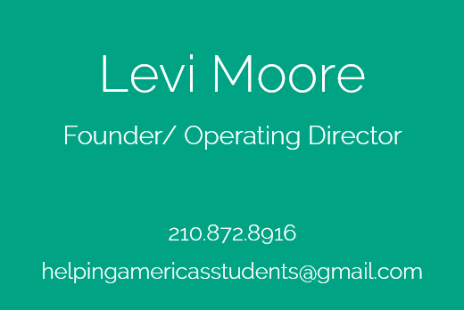

In conjunction to programming and engineering, I've been learning how to make website and I find that I do very much enjoy aesthetic design. The combination of being able to create something and present it in a way which is both pleasing and easy to comprehend is quite useful, I find.
Below are some website/ business card pairs I have created. Please contact me if you are interested in contracting me for web and/or business card design.
HAS is a charity with the purpose of relieving the financial (and other) burdens that American university students face. The client already had an existing wordpress website which he was not happy with. It contained picture of google maps saying the charity was located in Belarus. I cleaned up the existing wordpress site and wrote some HTML and CSS to build a custom navigation bar, donate button, and a few aesthetics things here and there.
In conjunction to the website, I also designed a set of business cards for this client pro-bono. His existing card did not match the aesthetics of his website in the slightest and was overtly verbose. These new cards are much more concise and streamline.
As you would suspect, I designed my website myself. It is build using HTML and CSS, no wordpress or such things involved at all. I wanted to channel my mindset as an engineer (minimalist, analytical, organized) with a melange of bright and dark colors. I was inspired by what I see as the current zeitgeist of design represented in Windows 8 and iOS 7, colorful and eschewing skeuomorphismin favor of symbolic representation of concepts.
This style reminds me of Art Deco from the 1920s: symmetrical and rectilinear but existing in the Digital Age rather than the Machine Age.
I designed my cards with the desire to express my skills in mechanics, electronics, and computer science without being visually overwhelming. Obviously, the gear represents the mechanics, the resistor the electronics, and the binary numbers the computer science.